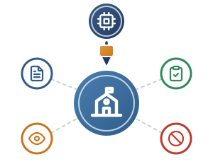

Scuola, fornitori e contratti · 1 di 3

Il fornitore sviluppa, la scuola utilizza e ne risponde
Inquadramento normativo
- AI Act, art. 3, par. 1, n. 4: è deployer chi utilizza un sistema di IA sotto la propria autorità: persona, autorità pubblica o altro organismo (escluso l’uso personale).
- D.M. 166/2025, par. 1.1 e 3.1: la scuola opera come deployer, con obblighi di governance:
- usare il sistema secondo le istruzioni del fornitore;
- monitoraggio da parte di personale formato (art. 4 AI Act);
- FRIA per i sistemi ad alto rischio (art. 27 AI Act);
- nessuna pratica vietata, es. riconoscimento delle emozioni (art. 5 AI Act).
Esempio: IA generativa per l’orientamento
Istituto Tecnico · percorsi di studio personalizzati
Il software è sviluppato da una società esterna (provider); la scuola lo mette a disposizione della propria comunità, nell’ambito dell’autonomia didattica. Come deployer verifica che lo strumento:
- rispetti le istruzioni d’uso;
- non effettui profilazioni vietate sui minori;
- resti sotto il controllo del docente (Human-in-the-Loop).